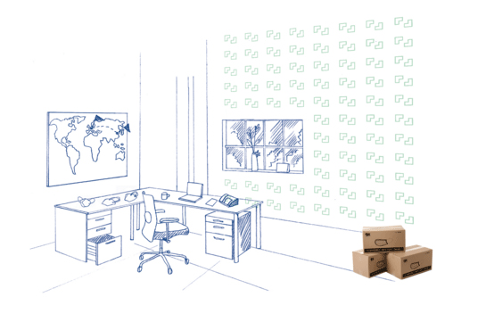
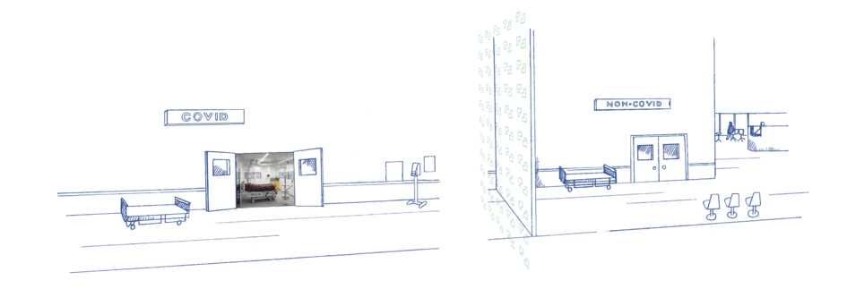
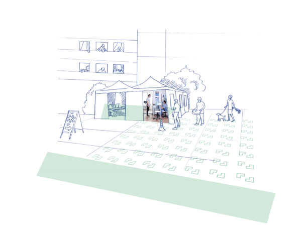
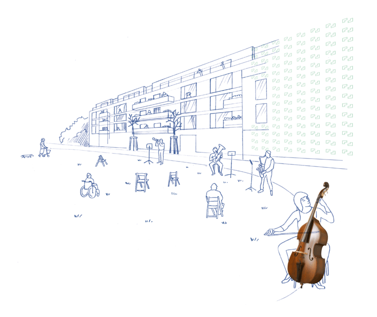
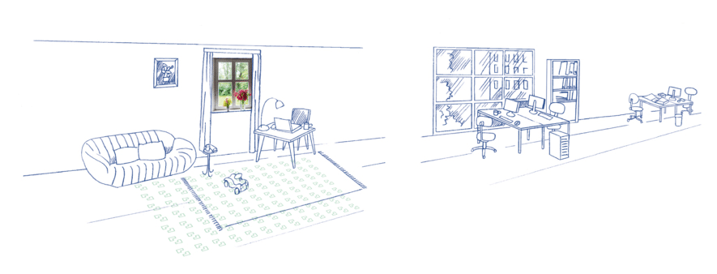
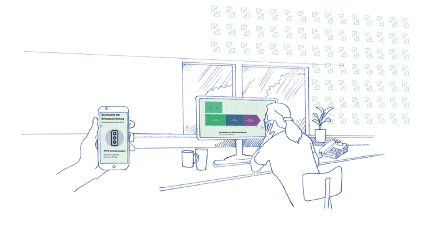
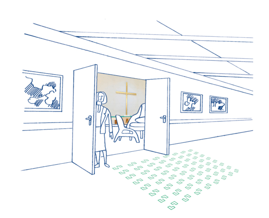
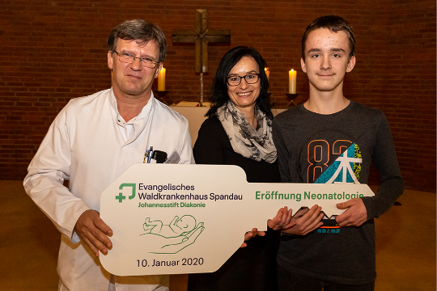
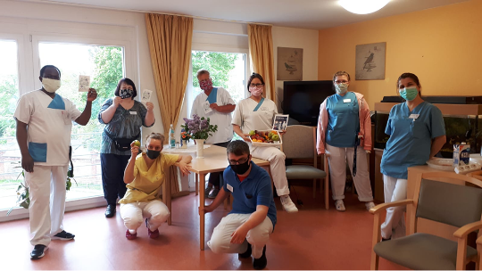

Willkommen beim Jahresüberblick der Johannesstift Diakonie für 2020. Sie finden hier wichtige Kennzahlen und Fakten, Projekte und Ereignisse als Auszüge aus dem aktuellen Geschäftsbericht.
Das zählt - Durch vorausschauendes Handeln konnte die Johannesstift Diakonie im Corona-Jahr 2020 ihre Position als wichtiges Gesundheits- und Sozialunternehmen behaupten. Unsere Kennzahlen zeigen Ihnen, was zählt.
Stories - In unseren Stories werfen wir einen Blick hinter die Kulissen unserer Krankenhäuser, Pflege- und Sozialeinrichtungen im Jahr der Pandemie und erfahren, wie Corona die Digitalisierung der Arbeitswelt vorangetrieben hat.
Chronik - Das Jahr von Lockdowns und Quarantänen war in unseren Einrichtungen alles andere als langweilig. Erfahren Sie, welche Ereignisse die Johannesstift Diakonie im Jahr 2020 bewegt haben.
Einrichtungen - In sechs Bundesländern finden Sie unsere Einrichtungen – von Sozialarbeitsteams über Pflegeeinrichtungen bis hin zu großen Krankenhäusern. Finden Sie heraus, wo in Deutschland unsere Angebote vertreten sind.
Vorstand - Führung mit Weitblick – das war für unseren Vorstand im Corona-Jahr 2020 wichtiger denn je. Erfahren Sie, wer die Johannesstift Diakonie durch schwierige Zeiten geleitet hat.
Im Fokus - Unsere 9.800 Mitarbeiten sind die Grundlage unseres Erfolgs. In 34 Tochtergesellschaften tun sie Gutes für ihre Mitmenschen – ob im Operationssaal oder am Schreibtisch, am Pflegebett oder im Stadtteilzentrum.
Die Leistungsfähigkeit der Johannesstift Diakonie, unserer Einrichtungen und Mitarbeitenden spiegelt sich in vielen Zahlen wieder.
Diese Auswahl gibt einen Eindruck der Größenordnungen. Weiter unten finden Sie weitere Daten und Fakten aus unserem Lagebericht 2020.
Mitarbeitende
Mio. EUR Konzerngesamtleistung
Betten
Fachleistungsstunden in der Jugendhilfe
Mio. EUR Investitionen
Plätze in der Behindertenhilfe
Pflegetage
ambulante Fälle
Stationäre Patient*innen
Casemix-Punkte
Interview mit Dr. med. Lutz Fritsche
JSD: Guten Tag Herr Prof. Dr. Fritsche. Ganz lieben Dank, dass Sie sich die Zeit für das heutige Interview nehmen. Im vergangenen Jahr hat uns viel bewegt. Die Corona-Pandemie war omnipräsent und bestimmte der Arbeitsalltag in der Johannesstift Diakonie. Ich würde von Ihnen zunächst gern erfahren, was Ihre ersten Gedanken waren, als fest stand, dass das neuartige Virus auch die Johannesstift Diakonie erreichen würde.
Prof. Dr. med. Fritsche: Durch die medialen, politischen und medizinischen Berichterstattungen war für mich im Grunde schon frühzeitig erkennbar, dass die Corona-Pandemie Deutschland und damit auch unsere Einrichtungen erreichen würde. Es war also ein vorhersehbares Geschehen, auf das wir uns bestmöglich vorbereiten konnten. Zudem habe ich in meiner beruflichen Laufbahn als Mediziner bereits mehrere Epidemien miterlebt und verspürte deshalb eine gewisse Sicherheit im Umgang mit solchen Ereignissen.
JSD: Was waren die ersten wichtigen Schritte, die Sie in Ihrer Funktion als Vorstand Medizin im Rahmen des Pandemiemanagements initiiert haben?
Prof. Dr. med. Fritsche: Zunächst mussten wir uns ein umfassendes Lagebild verschaffen, um einen konkreten Handlungsrahmen für unser Unternehmen ableiten zu können. Für mich hatte daher die Beschaffung relevanter Informationen von politischen Institutionen und medizinischen Fachgesellschaften oberste Priorität. Die anfänglich dünne und teilweise widersprüchliche Informationslage war hierbei zunächst eine Herausforderung, der wir aber mit einer professionellen, objektiven und transparenten Kommunikation begegnen konnten. Wir haben zum Beispiel schnell entschieden, dass die Information der Mitarbeitenden ausschließlich über meine Person erfolgen sollte. Damit konnten wir eine einheitliche Berichterstattung sicherstellen
JSD: Bleiben wir beim Thema Krisenkommunikation. Wie haben die Beschäftigten auf die neuartigen Herausforderungen der Corona-Pandemie reagiert und wie sind Sie dem in Ihrer Rolle als Vorstand Medizin begegnet?
Prof. Dr. med. Fritsche: Da es sich um ein bisher unbekanntes Virus handelte, reagierten viele Mitarbeitende zunächst unsicher und verängstigt. Die teilweise verstörenden Fernsehbilder aus italienischen Krankenhäusern verstärkten die Sorge auf Beschäftigtenebene, ebenfalls mit solch chaotischen Zuständen konfrontiert zu werden. Meine Vorstandskollegen und ich haben diese Ängste sehr ernst genommen und entsprechend reagiert. Über die Führungskräfte, das Intranet und den Corona-Blog haben wir eine konsistente Information und Aufklärung der Mitarbeitenden betrieben. Neben einer detaillierten Lageberichterstattung, Schulungsangeboten und Fachinformationen haben wir zudem einen konkreten Handlungsrahmen definiert, der für die nötige Sicherheit im Arbeitsalltag der einzelnen Einrichtungen sorgen sollte. Unsere dezentralen Führungskräfte waren hierbei die wichtigsten Multiplikatoren. Sie haben die Vorgaben an die jeweiligen Organisationsstrukturen angepasst und in konkrete Maßnahmen übersetzt.
JSD: Welche Herausforderungen resultierten neben einer professionellen Krisenkommunikation aus Ihrer Sicht noch us der Corona-Pandemie?
Prof. Dr. med. Fritsche: Sorge bereite- te mir anfänglich die Bereitstellung ausreichender Schutzausrüstung. Durch die hohe Nachfrage am Weltmarkt bei zeitgleicher Ausbreitung des Coronavirus kam die Produktion wichtiger Medizingüter wie Masken, Schutzkittel, Handschuhe und Desinfektionsmittel in vielen Ländern abrupt zum Stillstand. Ganze Lieferketten brachen plötzlich zusammen. Dem beherzten Einsatz unseres Einkaufs ist es zu verdanken, dass wir schnell alternative Lieferwege erschließen und damit drohende Versorgungsengpässe in den Einrichtungen überbrücken konnten.
JSD: Ihre Ausführungen machen deutlich, welch bedeutsamen Beitrag die einzelnen Einrichtungen, Abteilungen und Beschäftigten der Johannesstift Diakonie zur Bewältigung der Corona-Pandemie geleistet haben. Können Sie für mich abschließend einmal zusammenfassen, worauf Sie als Vorstandsmitglied besonders stolz sind?
Prof. Dr. med. Fritsche: Besonders stolz bin ich auf die konsistente Krisenkommunikation und deren Reichweite. Wir geben unseren Beschäftigten damit eine größtmögliche Sicherheit für ihre Arbeit während der Pandemie. Darüber hinaus hat sich der hohe Digitalisierungsgrad unseres Unternehmens als gewinnbringend erwiesen. Viele Mitarbeitende konnten bereits zu Beginn der Krise. problemlos in die Heimarbeit wechseln, weil die nötige IT-Infrastruktur vorhanden war. Das unterscheidet uns von vergleichbaren Arbeitgeber*innen. Die bedeutsame Rolle des Einkaufes als starke Säule in der Pandemie hatte ich schon benannt. Wir haben als Johannesstift Diakonie gezeigt, dass wir in der Lage sind, umfassenden Herausforderungen wie denen einer Pandemie mit einer hohen Professionalität zu begegnen. An vielen Stellen sind wir dabei persönlich über uns hinausgewachsen und haben uns weiterentwickelt. Das macht mich als Vorstandsmitglied natürlich besonders stolz.
JSD: Lieber Herr Prof. Dr. med. Fritsche, herzlichen Dank für diese interessanten Ausführungen und die spannenden Einblicke.
Perspektiven der Jugend- und Behindertenhilfe
Die August Hermann Francke Schule der Johannesstift Diakonie ist ein staatlich anerkanntes sonderpädagogisches Förderzentrum für Kinder mit geistigen und körperlich-motorischen Beeinträchtigungen. In zwölf Klassen werden im Ganztagsschulbetrieb zurzeit etwa 80 Kinder und Jugendliche unterrichtet.
„Mit individuellen Lernangeboten ermöglichen wir unseren Schüler*innen eine bestmögliche schulische und berufliche Eingliederung, gesellschaftliche Teilhabe und selbstständige Lebensgestaltung“, erklärt Schulleiterin Ulrike Müller. Die Schule ist ein Ort, der den Kindern neben einem vielschichtigen Lernangebot eine wichtige Tagesstruktur bietet und viel Aufmerksamkeit und Zuwendung schenkt. „Bei uns verspüren sie keinen Leistungsdruck. Die Kinder kommen gern jeden Tag hierher“, ergänzt die studierte Sonderpädagogin.
Darüber hinaus werden seit November 2020 sogenannte Pooltestungen durchgeführt. Das Besondere hierbei: Fünf unterschiedliche Abstriche bilden eine gemeinsame Probe. Labore können anschließend mit nur einer Analyse mehrere Abstriche zeitgleich untersuchen. Das spart nicht nur wertvolle Zeit, sondern auch Kosten. Nur wenn das Ergebnis positiv ausfällt, wird nachträglich jeder Abstrich einzeln untersucht.
Alle Beteiligten waren daher etwas bestürzt, als im März 2020 aufgrund der Corona-Pandemie bundesweite Schulschließungen angekündigt wurden. Während die Schüler*innen mit Tränen und großer Enttäuschung reagierten, bot sich für viele Eltern eine echte Herausforderung. „Für die Eltern der Kinder stellt der Schulalltag eine große Entlastung dar. Wir bieten hier nicht nur Unterricht und gesunde Mahlzeiten, sondern auch eine umfassende pflegerische und therapeutische Versorgung“, betont Ulrike Müller. Eine Schulschließung bedeutet den Wegfall dieser wichtigen Leistungen – für die Eltern ein großer Kraftakt.
„Wir haben deshalb schnell reagiert, unser Hygienekonzept an die neuen Erfordernisse angepasst und anschließend eine Notbetreuung für Kinder mit hohem Förderbedarf eingerichtet“, berichtet die erfahrene Pädagogin weiter. Durchschnittlich konnten so während des Lockdowns zwischen 20 und 30 Schüler*innen am Tag betreut werden. „Für den Unterricht zuhause haben wir digitale Unterrichtsmaterialien erstellt. Meine Mitarbeitenden sind hier richtig kreativ geworden“, erzählt Ulrike Müller stolz. So seien beispielsweise tolle Lernvideos und digitale Unterrichtssequenzen entstanden.
Ein Drittel der Schüler*innen lebt im Quellenhof, einer stationären Einrichtung der Behindertenhilfe. Hier wurden die Kinder und Jugendlichen direkt in den Wohngruppen beschult. Aus Sicht von Ulrike Müller bestand die besondere Herausforderung der Corona-Pandemie vor allem darin, für jede*n Mitarbeiter*in und jede*n Schüler*in ein geeignetes Aufgaben- bzw. Lernangebot zu konzipieren. Am Ende konnte für jede*n eine passende Lösung gefunden werden.
Trotz der großen Anstrengungen blicken Ulrike Müller und ihre Mitarbeitenden erwartungsvoll in das neue Jahr: „Der Umzug in ein neues Schulgebäude steht an. Im Sommer 2021 wird die Schule ohne Grenzen auf dem Gelände des Evangelischen Johannesstifts in Berlin-Spandau eröffnet.“ Die Schüler*innen der August Hermann Francke Schule werden hier künftig gemeinsam mit Kindern aus der benachbarten Evangelischen Schule Spandau lernen. Ein inklusives Projekt, auf das sich alle gemeinsam freuen.
Normalerweise führen die Mitarbeitenden und ehrenamtlichen Helfer*innen von Kinder beflügeln im Auftrag der Johannesstift Diakonie verschiedene Bildungsprojekte in den Berliner Schulen durch. „Wir sind ein bunt gemischtes Team mit vielfältigen Kompetenzen“, erklärt Claudia Lukat, Projektleitung von Kinder beflügeln. „Neben Studierenden beschäftigen wir unter anderem auch Bildhauer* innen, Schauspieler*innen und Erzäh- ler*innen.“
Was sie dabei eint? Das gemeinsame Engagement für die Bildung der Kinder. Im März 2020 kamen jedoch viele Projekte plötzlich zum Erliegen. Zur Eindämmung der Corona-Pandemie mussten bundesweit alle Kitas und Schulen schließen. „Das war eine prekäre Situation für uns, denn für unsere freien Mitarbeitenden stellt die Arbeit eine Existenzgrundlage dar“, berichtet die gelernte Erzieherin.
Durch Gespräche im Unternehmen erfuhr die engagierte Projektleitung dann, dass der Lockdown auch andere Mitarbeitergruppen vor Herausforderungen stellte: „Einigen Pflegekräften und Ärzt*innen fehlte schlagartig die Kinderbetreuung. Hier mussten wir einfach unterstützen!“ In einer gemeinsamen Hauruck-Aktion wurden binnen weniger Stunden passende Räume für eine Kindernotbetreuung im Evangelischen Geriatriezentrum Berlin (EGZB) und dem Evangelischen Krankenhaus Hubertus gefunden und kindgerecht mit Basteltisch und Spielecke ausgestattet.
„Über einen Zeitraum von fünf Wochen konnten wir täglich bis zu 14 Kinder von Kolleg*innen aus der Krankenversorgung betreuen. Es war eine Win-win-Situation für alle Beteiligten“, freut sich die erfahrene Familienberaterin und Supervisorin. „Meine Mitarbeiter*innen hatten eine geeignete Beschäftigung und die Eltern der Kinder konnten mit ruhigem Gewissen ihrer Arbeit in der Patientenversorgung nachgehen. So hatten wir alle etwas davon!“
Während des zweiten Lockdowns unterstützte das Team von Kinder beflügeln dann auch die Einrichtungen der Jugendhilfe mit passenden Unterrichtsangeboten. „Zum Ende des zweiten Lockdowns sank die Nachfrage für unsere Kindernotbetreuung, weil die Kitas selbst passende Angebote schufen. Da haben wir uns in der Jugendhilfe kurzerhand einen neuen Wirkungsort gesucht“, resümiert Claudia Lukat.
Hinter den Kulissen der Krankenhäuser
von dem Wissen, jeden Tag etwas Gutes zu tun, engagieren sich hunderte Klinikmitarbeitende auf einem sehr hohen
Als die globale Ausbreitung des Coronavirus in Politik und Medien präsent wurde, rückten die Krankenhäuser plötzlich in den Fokus der öffentlichen Diskussion. Prof. Dr. med. Lutz Fritsche, Vorstand Medizin, erklärt: „Eine zentrale Frage beschäftigte uns alle: Werden unsere Behandlungskapa-zitäten in den Kliniken ausreichen, um eine große Infektionswelle abzufedern?“ Viele Menschen waren durch die teils verstörenden Bilder von chaotischen Zuständen aus Ländern wie Italien stark beunruhigt. Die Angst war groß, dass das deutsche Gesundheitssystem aufgrund der Schwere der Pandemie nicht standhalten würde. Gesundheitsminister Jens Spahn forderte die deutschen Klinikbetreiber deshalb frühzeitig auf, alle medizinisch nicht zwingend notwendigen Aufnahmen und Operationen zu verschieben.
Die Krankenhäuser der Johannesstift Diakonie reagierten zügig und konsequent. Mit Unterstützung des Berliner Senates wurden in Rekordzeit 118 zusätzliche Beatmungs-geräte beschafft und auf die einzelnen Verbundskliniken verteilt. „Ergänzend haben wir bereits im Februar unter-schiedliche Expertenteams für das Pandemiemanagement in den jeweiligen Kliniken zusammengestellt“, erzählt Prof. Dr. med. Fritsche.
Außerdem wurden Pandemie- und Hygienepläne an die jeweils neuen Vorgaben von Bund und Ländern angepasst. Die anfängliche Problematik fehlender Schutzausrüstung konnte durch das große Engagement des Zentraleinkaufs der Johannesstift Diakonie ebenfalls gut gelöst werden. Geplante Operationen wurden entsprechend den politischen Vorgaben auf einen späteren Zeitpunkt verschoben. Bedingt durch die geringe OP-Auslastung konnten dann im März ganze Stationen für die Behandlung von COVID- 19-Patient* innen freigehalten werden.
In seiner Rolle als Vorstand Medizin resümiert Prof. Dr. med. Fritsche: „Besonders beeindruckt hat mich die durchgehend professionelle Zusammenarbeit aller Beteiligten. Nach dem Motto: Gemeinsam geht mehr‘ haben wir gezeigt, wie professionell und agil unser Unternehmen auf die dynamischen Anforderungen der Corona-Pandemie reagieren konnte. So waren wir bestmöglich für die Pandemie gerüstet.“
Die Evangelische Lungenklinik der Johannesstift Diakonie ist eine der größten deutschen Fachkliniken, die sich auf die Behandlung von akuten und chronischen Lungen- bzw. Thoraxerkrankungen spezialisiert haben. Das Krankenhaus verfügt über ein eigenes Weaning-Zentrum, in dem beatmete Patient*innen sukzessiv vom Beatmungsgerät entwöhnt werden.
Noch bevor die Corona-PandemieDeutschland erreichte, war für die Expert*innen der Lungenklinik klar, dass der Bedarf an intensivmedizinischen Beatmungsplätzen mit Ausbreitung des neuartigen Virus stark zunehmen würde. „Wir haben deshalb frühzeitig unsere Beatmungskapazi-täten von 21 auf 31 Bettplätze ausgebaut“, berichtet Bert Zeckser, Geschäftsführer der Evangelischen Lungenklinik.
Auch der Berliner Senat reagierte auf die neuen Anforderungen und verabschiedete das sogenannte SAVE Konzept, das die intensivmedizinische Versorgung von COVID-19-Patient*innen in den Akutkrankenhäusern regeln sollte. „Da wir nicht als Primärversorger ausgewiesen sind, resultierte aus dem SAVEKonzept zunächst kein Auftrag für uns“, erklärt Bert Zeckser.
„Jedoch stellten wir fest, dass im Konzept keine Regelungen für die Weiterbehandlung der intensivmedizinischen Patient*innen mit Weaningbedarf definiert waren“, bemerkt der ehemalige Krankenpfleger und studierte Betriebswirt. Die identifizierte Versorgungslücke nahmen Expert*innen der Evangelischen Lungenklinik nachfolgend zum Anlass, um das bisher einzigartige POST-SAVE-Konzept zu entwickeln.
„Unser Konzept sieht die Weitervermittlung von Intensivpatient* innen mit Weaningbedarf durch die Evangelische Lungenklinik vor. Wir fungieren damit als Bindeglied zwischen den Intensivstationen der Akutkrankenhäuser und den Nachsorgeeinrichtungen für die Beatmungsentwöhnung“, erklärt der Klinikchef. Ein Lotsen Team nimmt über eine neu eingerichtete Telefon-Hotline Vermittlungsanfragen der Primärversorger entgegen und gleicht diese mit zuvor registrierten freien Plätzen in Weaning-Zentren und außerklinischen Beatmungspflege-einrichtungen im Raum Berlin-Brandenburg ab. Anschließend wird die Überleitung und die ärztliche Weiterbehandlung der Patient*innen organisiert.
Mit dem neuartigen POST-SAVE-Konzept hat sich die Evangelische Lungenklinik somit erneut als kompetenter Ansprechpartner für den Berliner Senat und die Akut-krankenhäuser positionieren können. Das Team der Spezialklinik stellt nicht nur die optimale Weiterbehandlung von Intensivpatient*innen sicher, sondern sorgt darüber hinaus auch für freie Kapazitäten auf den Berliner Intensivstationen: Für eine bessere Gesundheitsversorgung in der Hauptstadt.
Als das Coronavirus Anfang 2020 Deutschland erreichte, war das Evangelische Krankenhaus Paul Gerhardt Stift auf zu erwartende steigende Patient*innenzahlen bereits vorbereitet: „Wir hatten schon Ende Februar eine Task Force mit Mitgliedern des Krankenhaus-Direktoriums, Chef-ärzt*innen sowie Kolleg*innen aus weiteren Abteilungen zusammengestellt“, erklärt Matthias Lauterbach, Geschäftsführer des Klinikums.
Anfangs täglich und später im 14-tägigen Rhythmus kam die Task Force zusammen, um die dynamische Lage anhand neuer Entwicklungen zu bewerten und entsprech-ende Maßnahmen einzuleiten. „Der enge Sitzungsrhythmus, die kontinuierliche Information unserer etwa 800 Kolleg*in-nen und der Austausch mit Landrat, Oberbürgermeister und den Amtsärzt*innen haben sich bis heute bewährt“, ergänzt er.
Zunächst wurde die Intensivkapazität auf 20 Plätze erweitert und eine räumliche Trennung der Klinik in einen COVID- und einen Non-COVID-Bereich vorgenommen.
Zutritt zur Klinik erhielten Patient* innen ausschließlich über ein Sondernot-aufnahmezelt. „Mit diesem restriktiven Vorgehen wollten wir die Ausbreitung des Virus nachhaltig eindämmen“, betont der studierte Betriebswirt.
Im April wurde dann das COVID-Kompetenz- Zentrum eröffnet. „Das Sonder- Notaufnahmezelt hätte uns dauerhaft an personelle Kapazitätsgrenzen gebracht. Mithilfe der neuen Abteilung konnten wir die Behandlung von COVID-19-Patient*innen oder -Verdachtsfällen strategisch sinnvoll an einem Ort bündeln“, so Matthias Lauterbach. Zusätzliche Maßnahmen wie Mund-Nasen- Schutz für alle Mitarbeitenden und eine intensive Teststrategie tragen bis heute zur höchstmöglichen Sicherheit bei. Seit Beginn der Pandemie wurden in der Klinik insgesamt 470 Corona Patient*innen behandelt und versorgt.
„Rückblickend können wir feststellen, dass sich unser vorausschauendes Handeln ausgezahlt hat“, resümiert Matthias Lauterbach, der für das Jahr 2021 Umbaumaß-nahmen plant, um die Versorgung infektiöser Patient*innen künftig noch besser gewährleisten zu können.
Der Einkauf als starke Säule
Von der Beschaffung bis zur Lieferung – der Zentraleinkauf der Johannesstift Diakonie versorgt Kund*innen in acht Bundesländern mit medizinischen und nichtmedizinischen Materialien. „Zu unserem Kundenkreis zählen neben 39 Krankenhäusern auch verschiedene Pflege- und Sozialeinrichtungen“, erklärt Marco Lasczyk, Bereichsleiter des strategischen Einkaufs. Der zentrale Auftrag: Die durchgehende Sicherstellung der Materialversorgung in den unterschiedlichen Gesundheitseinrichtungen. Hierfür setzt die Abteilung auf ein breites, globales Beschaffungs-netzwerk, das kontinuierlich ausgebaut wird.
Normalerweise funktioniert die Beschaffung der Waren nahezu reibungs- los. Als sich Anfang 2020 das Coronavirus über die ganze Welt ausbreitete, wurde die Versorgungslage jedoch schlagartig brisant. Die hohe Nachfrage am Weltmarkt und der Zusammenbruch der Lieferketten führten in kürzester Zeit zu einem flächendeckenden Mangel an Schutzausrüstung und Hygienematerial. Länder wie China, Norditalien und die Türkei stellten die Produktion in ihren Fabriken ein und verhängten Exportstopps.
„Anfangs waren vor allem FFP2-Masken und medizinischer Mund-Nasenschutz Mangelware“, erinnert sich Marco Lasczyk. Später waren dann flüssigkeitsdichte Schutzkittel, Handschuhe und Desinfektionsmittel kaum mehr verfügbar. „Wir mussten hier schnell reagieren“, betont er. Die große Herausforderung bestand dabei in der Identifikation seriöser Lieferanten und dem Aufbau neuer Lieferketten. „Es wurden viele Produktfälschungen gehandelt. Wir mussten neue Zulieferer daher sehr genau überprüfen“, erläutert der studierte Wirtschaftsingenieur.
Daneben war Kreativität für die Erschließung neuer Transportwege gefragt. In Zusammenarbeit mit einem Export-Import- Unternehmen, das normalerweise auf Schwerlasttransporte spezialisiert ist, baute Thomas Weege, Bereichsleiter des operativen Einkaufs, eine neue, beeindruckende Lieferkette auf: „Via Zug haben wir Schutzmasken von Nordchina über die ehemalige Seidenstraße, Weißrussland und Polen bis nach Berlin transportieren lassen“, berichtet der erfahrene Einkäufer. Von März bis Juni 2020 fuhr der Zug insgesamt fünfmal. „Es war jedes Mal ein erleichtertes Aufatmen, wenn die Waren den Zielort sicher erreicht hatten“, erinnert er sich.
Neben der Bahnverbindung wurden für den Produkttransport auch kurzfristig Flüge gechartert. Versorgungsengpässe konnten damit schnell überbrückt werden. Nur durch das engagierte und professionelle Handeln der 35 Mitarbeitenden des Einkaufes wurde es möglich, die Versorgungssicherheit in den Kliniken, Pflege- und Sozialeinrichtungen auf einem sehr hohen Niveau zu halten. Gelernt haben sie dabei vor allem eines: Es ist wichtig, Lieferketten genauer zu kennen, um die Vertriebswege anschließend besser einschätzen zu können.
„Die Pandemie hat uns dazu veranlasst, deutlich globaler vernetzt zu denken und zu handeln“, resümieren Marco Lasczyk und Thomas Weege.
Interne Maskenproduktion läuft an. Überraschende Hilfe kam vom Team Die Wille, einer sozialen Bildungseinrichtung der Johannesstift Diakonie, die sich auf das Coaching und die Beratung von Menschen im Rahmen des Teilhabechancengesetzes spezialisiert hat.
„Normalerweise fertigen wir in unseren drei WERTRAUM-Werkstätten in Handarbeit hochwertige Upcycling-Produkte, wie zum Beispiel Geschenkbeutel oder Notizblöcke“, berichtet Anne Keller, Verantwortliche für die Öffentlichkeitsarbeit von Die Wille. Als der Mangel an Masken zu Beginn der Corona-Pandemie omnipräsent wurde, entschloss sich das WERTRAUMTeam kurzerhand dazu, das Sortiment um Alltagsmasken zu erweitern. Was am Anfang noch einem Experiment glich, wurde schnell zu einer umfangreichen Produktion. Aus speziellen, zertifizierten Stoffen wurden pro Woche rund 100 Alltagsmasken von Hand genäht. Dankbare Abnehmer*innen waren neben diversen Einrichtungen der Johannesstift Diakonie auch Berliner Kitas und Schulen.
Ein Blick in die Pflegeeinrichtungen und Hospize
Bei der Eindämmung des neuartigenCoronavirus gehören Tests für den Erregernachweis zu den wichtigsten Werkzeugen. Deutschland hat deshalb schon zu Beginn der Pandemie Testkapazitäten aufgebaut und eine nationale Teststrategie verabschiedet. Regelhafte Testungen sind dabei insbesondere für Gesundheitseinrichtungen Pflicht. Die Sparte Pflege und Wohnen der Johannesstift Diakonie setzte die neuen Vorgaben mit geballter Kompetenz schrittweise um.
Kompetenz schrittweise um. „In gemeinsamer Anstrengung haben wir eine passende Teststrategie für unsere Pflege-einrichtungen entwickelt, die auf drei unterschiedlichen Testverfahren basiert“, erläutert Melanie Kruse, Assistentin der Geschäftsführung für die Region Spandau und Bran-denburg. Zur Infektionsverhütung muss das Personal der Pflegeeinrichtungen nun alle zwei Tage mittels PoC-Antigen-Schnelltest auf eine COVID-19-Infektion untersucht werden. Zeigt der Test ein positives Ergebnis, soll ein anschließender PCR-Test letzte Gewissheit bringen. „Zusätzlich testen wir auch alle Besucher* innen. Zutritt zur Einrichtung können wir nur erteilen, wenn ein negatives Testergebnis vorliegt“, ergänzt die gelernte Krankenschwester.
Darüber hinaus werden seit November 2020 sogenannte Pooltestungen durchgeführt. Das Besondere hierbei: Fünf unterschiedliche Abstriche bilden eine gemeinsame Probe. Labore können anschließend mit nur einer Analyse mehrere Abstriche zeitgleich untersuchen. Das spart nicht nur wertvolle Zeit, sondern auch Kosten. Nur wenn das Ergebnis positiv ausfällt, wird nachträglich jeder Abstrich einzeln untersucht.
„Für die Pooltestung wählt jede unserer Einrichtungen einmal pro Woche per Zufallsprinzip eine definierte Anzahl an Mitarbeitenden und Bewohner*innen für einen Abstrich aus. Mit diesem Vorgehen sorgen wir für noch mehr Sicherheit“, betont Melanie Kruse.
Die größte Herausforderung bei der Umsetzung der Teststrategie bestand in der regelhaften Zusammenführung und Information der relevanten Stakeholder*innen: „Wenn die Zeit drängt, erscheint es umso wichtiger, dass alle an einem Strang ziehen.“ Gemeinsam mit ihren Kolleg*innen setzt sie sich daher stringent für die Stärkung interner Netzwerke ein: „Damit wir künftig noch schneller auf wechselnde Anforderungen reagieren können. Gemeinsam geht eben einfach mehr!“
Die Kolleg*innen in den Hospizen der Johannesstift Diakonie unterstützen Menschen bei dem letzten, schwierigsten Weg in ihrem Leben. Ihre Arbeit beginnt meist dann, wenn nach schwerer Krankheit die letzte Lebensphase in der Häuslichkeit nicht mehr möglich ist. Der anvertraute Mensch kommt dabei als Gast ins Hospiz. Wie es bei Gästen üblich ist, stehen deren Wünsche und Bedürfnisse stets im Mittelpunkt des Tuns.
Die wichtigste Frage am Anfang jeder Sterbebegleitung lautet: „Wie und mit wem möchten Sie Ihre letzten Tage verbringen?“ Eine Frage, so schmerzlich und doch so bedeutend. Bedeutend für denjenigen, der weiß, dass er bald Abschied nehmen muss. Am Lebensende zählt für viele Menschen meist nur noch eines: Die wertvollen letzten Stunden mit den Menschen zu verbringen, die ihnen wirklich nahe stehen. Am Lebensende kommt aber oft auch die Angst vor dem Tod. Der Gast trauert darum, bald nicht mehr Teil dieser Welt sein zu dürfen. All das braucht Wärme, Geborgenheit und aufmerksame Zuhörer*innen.
„Jedoch stellten wir fest, dass im Konzept keine Regelungen für die Weiterbehandlung der intensivmedizinischen Patient*innen mit Weaningbedarf definiert waren“, bemerkt der ehemalige Krankenpfleger und studierte Betriebswirt. Die identifizierte Versorgungslücke nahmen Expert*innen der Evangelischen Lungenklinik nachfolgend zum Anlass, um das bisher einzigartige POST-SAVE-Konzept zu entwickeln.
Nähe und Zuwendung sind deshalb existentielle Bestandteile der Sterbebegleitung und Trauerarbeit. Die Mitarbeiter* innen in den Hospizen hören zu, spenden wertvollen Trost und schenken Mut.
Anfang 2020, zu Beginn der Corona-Pandemie, wurde diese Grundfeste auf eine harte Probe gestellt. Für die beiden Einrichtungsleiterinnen Andrea Chucks und Sindy Herrmann standen plötzlich zwei völlig neue Fragen im Raum: „Müssen wir unsere Türen fortan für Besucher*innen schlie-ßen, um unsere Gäste zu schützen? Wieviel körperliche Nähe dürfen wir im Rahmen unserer Palliativarbeit jetzt noch zulassen?“in der Hauptstadt.
Für die beiden erfahrenen Leitungen stand jedoch von Anfang an fest: Sie würden alles dafür tun, damit Gäste und Angehörige unbeeinflusst vom Pandemiegeschehen Abschied nehmen können. Zudem sollten zentrale Angebote und Rituale der Trauer- und Sterbebegleitung, wie beispielsweise die Aussegnung, weiterhin Bestand haben.
Während andere Hospize in Deutschland für Besucher*in-nen die Türen schlossen, entwickelten die beiden Leiterin-nen gemeinsam mit ihren Teams geeignete Konzepte. Hygienerichtlinien und Arbeitsprozesse wurden an die neuen Erfordernissen angepasst, geeignete Schutzausrüs-tung geordert, Mitarbeiter* innen geschult und Angehörigen-informationen ausgelegt. Darüber hinaus richteten sie gemeinsam mit den ambulanten Hospizdiensten eine Trauerhotline ein, die das Trauercafé und den Trauertreff im Lockdown ersetzen sollte. Seit Mitte Oktober werden zudem regelmäßige PoC-Antigen-Schnelltests durchgeführt, um Gäste und Mitarbeitende vor COVID-19-Infektionen zu schützen.
Mit ihrem beherzten Handeln und dem stets besonnenen Abwägen der neuen Erfordernisse standen die beiden Leitungen gemeinsam mit ihren Teams für die Selbstbestimmung und Autonomie ihrer Gäste ein. Ein beispielloses Handeln, durch das Nächstenliebe in der Pandemie spürbar wurde.
Die Corona-Maßnahmen haben das Leben in den Alten- und Pflegeheimen der Johannesstift Diakonie stark verändert. Da Pflegebedürftige zur Hochrisikogruppe zählen, gelten seit Beginn der Pandemie strenge Schutzauflagen, die eine Ansteckung mit dem Coronavirus verhindern sollen. Neben erhöhten Quarantäneauflagen müssen die Senior*innen vielerorts auf gemeinsame Mahlzeiten und Aktivitäten verzichten.
Besonders hart traf es die Bewohner* innen im März 2020, als für mehrere Wochen ein striktes Besuchsverbot verhängt wurde. „Für viele Senioren ist der regelmäßige Kontakt zu ihren Angehörigen existentiell und eine willkommene Abwechslung zum Heimalltag“, weiß Roswitha Gabriel, Geschäftsführerin von Pflege und Wohnen. Mit dem Kontaktverbot verschwand plötzlich ein wichtiger Lebensinhalt. „Der Kontakt mit Angehörigen und Freunden kann durch nichts ersetzt werden“, betont sie.
Gemeinsam mit ihrem Team hat sie deshalb eine Reihe an kreativen Ideen entwickelt, um der Einsamkeit etwas entgegenzusetzen: Neben speziellen Besucher*innen-Boxen und kurzen Gesprächen am Fenster wurden Tablets beschafft, um Videotelefonate zu ermöglichen. „Ergänzend können Angehörige seit Ende März über die Homepage der Einrichtungen eine digitale Grußbotschaft versenden, die wir dann für die Bewohner*innen ausdrucken und ihnen vorlesen“, ergänzt Roswitha Gabriel. Ganze 238 Nachrichten wurden bisher übermittelt.
Eine gelungene Abwechslung zum Pandemie-Alltag bot zudem eine Reihe an außergewöhnlichen musikalischen Darbietungen. Musiker*innen, die wegen der Corona-Krise geplante Auftritte absagen mussten, verlagerten ihre Konzerte kurzer- Mit Grußbotschaften und Musik gegen die Einsamkeit. 24 Johannesstift Diakonie Geschäftsbericht 2020 AUS DER PANDEMIE GELERNT hand in die Vorgärten der Alten- und Pflegeheime – zur Freude von Bewohner*innen und Mitarbeitenden. Gemeinsam konnten sie unter anderem den atemberaubenden Klängen des USamerikanischen Starorganisten Cameron Carpenter lauschen, der auf einem Truck sitzend verschiedene Stücke von Johann Sebastian Bach zum Besten gab.
Für alleinlebende Senior*innen organisierte der ehrenamtliche Besuchsdienst „Lebendige Nachbar-schaft“ zudem eine Konzertreihe im Treppenhaus. Musik für die Seele, mit Musik gegen die Einsamkeit. „Die gemein-same Zeit mit Angehörigen und Freunden konnten wir nicht ersetzen. Aber es ist uns gelungen, den Alltag in Zeiten der Pandemie für unsere Bewohner*innen etwas bunter zu machen“, so das Fazit von Roswitha Gabriel.
Digitale Arbeitswelt
Seit Beginn der Corona-Pandemie befindet sich die Arbeitswelt in einem starken Wandel. Die privaten und beruflichen Kontakte mussten zugunsten des Gesundheitsschutzes weitestgehend reduziert werden. Wo möglich sollte die Arbeit in die privaten Arbeitszimmer der Beschäftigten verlagert werden. Für viele Firmen ein Kraftakt, da die erforderliche technische Infrastruktur noch nicht ausreichend ausgebaut war.
Die Johannesstift Diakonie ging hier mit gutem Beispiel voran. „Aufgrund unseres hohen Digitalisierungsgrades konnten wir binnen kürzester Zeit rund 1.200 Heimarbeitsplätze erfolgreich einrichten“, erklärt Dirk Hoyer, Geschäftsführer von Conciliamus, der IT-Gesellschaft des Unternehmens. Um weiterhin Meetings zu ermöglichen, wurde zusätzlich eine Plattform für Videokonferenzen implementiert. „Bisher konnten hierüber rund 5.000 Webkonferenzen realisiert werden. Die steigenden Nutzerzahlen zeigen die hohe Relevanz dieses digitalen Formates.“ Insgesamt haben sich die Beschäftigten der Johannesstift Diakonie seit Beginn der Pandemie rund 21.000 Stunden in digitale Konferenzen eingebracht.
„Für uns war dies eine gänzlich neue Situation“, berichtet Nicole Ligier, Leiterin des Zentralen Schadensmanagements der Johannesstift Diakonie. „Homeoffice war bisher einfach kein integraler Bestandteil der Arbeitskultur. Daher bestand die Notwendigkeit, neue Regeln für die Zusammenarbeit zu definieren.“ Trotz der vorhandenen technischen Infrastruktur mussten die abteilungsinternen Arbeitsprozesse zunächst an den Homeoffice- Bereich angepasst werden.
Hierfür fanden die Teams ganz unterschiedliche Lösungen: Während das Zentrale Schadensmanagement sofort auf den 100-prozentigen Homeoffice- Betrieb umstellen konnte, war dies für andere Abteilungen in diesem Umfang nicht realisierbar.
„In der Personalabteilung haben wir unsere Arbeitsprozesse sofort an die neuen Erfordernisse angepasst“, erklärt Nancy Höhne, stellvertretende Leiterin Zentrale Dienste Personal. In Rücksprache mit den Beschäftigten wurde zunächst für bestimmte Arbeitsbereiche ein Zwei- Schichtsystem eingeführt und mit Homeoffice- Tagen sinnvoll kombiniert. „So konnten wir die Kontakte erfolgreich reduzieren und gleichzeitig unsere Mitarbeitenden bei der Organisation von Beruf und Familie unterstützen“, ergänzt die Personalerin.
Als herausfordernd erwies sich für viele Mitarbeiter*innen das zusätzliche Erfordernis der Kinderbetreuung. „Plötzlich sollten wir nicht nur von zuhause arbeiten, sondern gleichzeitig auch noch unsere Kinder beaufsichtigen und unterrichten, weil Schulen geschlossen waren“, berichtet Yvonne Schniarkowski, Mitarbeiterin im Zentralen Schadensmanagement.
Alles unter einen Hut zu bekommen war auch für Annett Göttlicher nicht immer leicht: „Ich habe eine kleine Tochter, die meine volle Aufmerksamkeit beansprucht. Im ersten Lockdown musste ich meine Arbeitszeiten im Homeoffice an ihre Bedürfnisse anpassen, weil es keine Notbetreuung durch die Kita gab. So konnte ich oft nur mittags und am Abend wirklich konzentriert arbeiten“, erklärt die Personalcontrollerin.
Andererseits profitierten auch viele Arbeitnehmer*innen von der Heimarbeit: „Ich bin Berufspendlerin und stehe deshalb immer chronisch unter Zeitdruck. Durch das Homeoffice fällt mein Arbeitsweg weg. Ich spare wertvolle Zeit, die ich nun effektiv für meine Arbeit und die Familie nutzen kann. Das finde ich klasse“, stellt Annett Göttlicher heraus. Nicole Ligier ergänzt: „Wir konnten durch das Homeoffice unsere internen Arbeitsprozesse optimieren, indem wir unnötige Papierakten gänzlich abgeschafft haben.“
Als nachteilig wird vor allem der fehlende persönliche Kontakt zu den Kolleg*innen benannt. Durch die Heimarbeit nimmt das Zugehörigkeitsgefühl zum Team ab und es besteht die Gefahr, dass die Grenzen zwischen Arbeit und Privatleben verschwimmen.
In einem sind sich alle Beteiligten allerdings einig: Die Mischung macht’s! Ein flexibler Wechsel zwischen Heimarbeit und Bürotagen – auch nach der Pandemie – sollte unbedingt ermöglicht werden.
Die Bedeutung einer professionellen Krisenkommunikation rückte mit Beginn der Corona-Pandemie stark in den Fokus von Entscheider*innen. In seiner Rolle als Medizinischer Vorstand der Johannesstift Diakonie erinnert sich Prof. Dr. med. Lutz Fritsche an die Herausforderungen, die besonders am Anfang der Pandemie aus Sicht der Unternehmensführung präsent waren: „Ein Großteil der Beschäftigten hatte Angst vor dem neuartigen Virus. Viele beunruhigten die erschreckenden Bilder von Ausnahmezuständen in italienischen Kliniken, die in den Medien omnipräsent waren. Das zunächst unklare Lagebild führte zur allgemeinen Verunsicherung im Unternehmen. Der Informationsbedarf war entsprechend hoch.“
Aus diesem Grund galt es Gerüchten und falschen Spekulationen frühzeitig entgegenzuwirken. Mitarbeitende der Johannesstift Diakonie sollten umfassend und vor allem einheitlich zum Coronavirus informiert werden.
Mit Unterstützung der Zentralen Dienste Kommunikation und Marketing richtete der Vorstand deshalb kurzfristig einen Blog ein. Seit Mitte März erhalten Beschäftigte hierüber transparente und objektive Informationen zur COVID-19-Pandemie. Neben ausführlichen monatlichen Lageberichten werden aktuelle Entwicklungen fortlaufend publiziert. Darüber hinaus haben Beschäftigte die Möglichkeit, einen Corona-Newsletter zu abonnieren. Bisher konnten rund 6.000 Besucher*innen gezählt werden.
„Besonders stolz sind wir in diesem Zusammenhang auch auf unser selbst entwickeltes Kennzahlen-Dashboard“, berichtet Prof. Dr. med. Fritsche. Auf einen Blick können Interessierte hier die aktuelle Sicherheitsstufe und die Anzahl positiver COVID-19-Fälle in den Einrichtungen der Johannesstift Diakonie einsehen. Darüber hinaus wird mittels Ampelsystem zur aktuellen Aus- lastung der Intensivstationen, der Verfügbarkeit von Schutzausrüstung und den Bearbeitungszeiten der Labore informiert.
Immer gut informiert – Der Corona-Blog. Johannesstift Diakonie Geschäftsbericht 2020 AUS DER PANDEMIE GELERNT Mit fortschreitender Pandemie ist zudem das Thema Schutzimpfung stark in den Fokus der Unternehmensführung gerückt. „Wir haben hier eine gewisse Unsicherheit bei unseren Beschäftigten registriert, der wir zügig mit einer objektiven Informationspolitik entgegenwirken wollten“, so Prof. Dr. med. Fritsche. Alle relevanten Hinweise zu den einzelnen COVID-19-Impfstoffen wurden sehr ausführlich und verständlich auf den Seiten des Corona- Blogs veröffentlicht. Das Medium hat sich damit als erfolgreiches Instrument für die Kommunikation in der Krise erwiesen.
„Mithilfe des Corona-Blogs stellen wir sicher, dass unsere Mitarbeitenden durchgehend gut informiert sind“, resümiert der erfahrene Mediziner auch im Namen seiner Vorstandskollegen.
Seelsorge und Ethik in der Pandemie
Die Arbeit der Seelsorge nimmt in der Johannesstift Diakonie einen wichtigen Stellenwert ein und ist fest im Unternehmensleitbild verankert. Derzeit engagieren sich rund 20 Mitarbeiter*innen für das seelische Wohl von Patient*innen, Bewohner*innen, Angehörigen und Beschäftigten.
Dr. Werner Weinholt betont: „Für mich als Leitender Theologe der Johannesstift Diakonie stellt Spiritual Care eine wichtige Grundfeste unserer konfessionellen Arbeit dar. Im Rahmen unseres Tuns vermitteln wir bedeutende Werte wie Zuwendung und Nächstenliebe, die unser Miteinander im Unternehmen bestimmen.“ Die Arbeit der Seelsorge ist damit integraler Bestandteil der Pflege und Begleitung von Hilfe suchenden Menschen in der Johannesstift Diakonie. „Damit unterscheiden wir uns deutlich von der Privatwirtschaft oder dem öffentlichen Sektor“, ergänzt der Theologe.
Oft ist die Tätigkeit als Seelsorger*in sehr fordernd, weil sie tiefe Einblicke in die Sorgen und Nöte der anvertrauten Menschen gewährt. Die Mitarbeitenden erfahren jedoch vielfach eine große Dankbarkeit, die als wesentlicher Antrieb für die Arbeit fungiert. Dabei nimmt die physische Präsenz bei der Beratung und Begleitung von Hilfebedürftigen im Rahmen der Seelsorge einen hohen Stellenwert ein. Als die Corona-Pandemie Deutschland erreichte, wurde dieses Fundament der seelsorglichen Arbeit plötzlich in seiner Beständigkeit bedroht.
Zum Schutz der Bevölkerung sollten die Begegnungen im Krankenhaus und Pflegeeinrichtungen auf die wesentlichen systemrelevanten Berufsgruppen reduziert werden. Viele Träger schlossen daraufhin die Mitarbeiter*innen der Seelsorge aus den unmittelbaren Kontaktbereichen der Gesundheitseinrichtungen aus.
„Vor dem Hintergrund der wachsenden Angst und Ungewissheit bei Beschäftigten wie auch in der allgemeinen Bevölkerung haben wir diese Entscheidung als sehr problematisch bewertet“, erläutert Dr. Werner Weinholt.
Der Bedarf an seelsorglicher Unterstützung ist seit dem Pandemiebeginn signifikant gestiegen. Gerade jetzt einen Rückzug aus den Einrichtungen der Johannesstift Diakonie zu befürworten, erschien allen Beteiligten als unverständlich. Nach einem gemeinsamen Abwägungsprozess wurde daher einvernehmlich beschlossen, auch während des Lockdowns in den Krankenhäusern, Pflegeeinrichtungen und Hospizen der Johannesstift Diakonie weiterhin physisch präsent zu bleiben. Hierfür wurden die Seelsorger* innen wie alle anderen mit entsprechender Schutzausrüstung ausgestattet.
Die anhaltende Präsenz in den Einrichtungen ließ für die Mitarbeitenden der Seelsorge schnell deutlich werden, dass der seelsorgliche Beratungs- und Hilfebedarf besonders bei den Kolleg*innen in der direkten Patient*innenversorgung sehr hoch war. Neben schwierigen ethischen Fragestellungen wurden häufig Unsicherheit, Ängste und Sorgen artikuliert.
Ausgezeichnete Versorgung im Evangelischen Geriatriezentrum Berlin (EGZB). Die Fachklinik für Altersmedizin erhält als zweites Berliner Krankenhaus das Qualitätssiegel Geriatrie.
Für einen optimalen Start ins Leben: Am Evangelischen Waldkrankenhaus Spandau hat die neue Neonatologie eröffnet. Die Intensivstation für Früh- und Neugeborene hat 21 Betten, zehn Familienzimmer und ein Schlaflabor
Die Klinik Amsee eröffnet ein neues Medizinisches Versorgungszentrum im Alten Bahnhof von Waren. Ab sofort werden hier Patient*innen mit Lungenerkrankungen ambulant behandelt.
Deutschlands beste Arbeitgeber: Johannesstift Diakonie belegt Platz 9 in der Branche Gesundheit und Soziales.
Livegang: Die Website der Johannesstift Diakonie präsentiert sich in einem neuen, modernen Design. Der Reihe nach werden nun alle Einrichtungen der Johannesstift Diakonie gAG in den neuen Auftritt integriert.
Der erste Lockdown: Krankenhäuser, Pflegeheime und Einrichtungen der Jugend- und Behindertenhilfe schließen ihre Türen für Besucher*innen. Hunderte Heimarbeitsplätze werden in Rekordzeit eingerichtet, um Kontakte zu reduzieren. Schulen und Kitas stellen auf Notbetreuung um.
Die Kliniken rüsten auf: Die Johannesstift Diakonie erhält 118 zusätzliche Beatmungsgeräte und baut damit die intensivmedizinische Versorgung aus. Gleichzeitig wird die Anzahl elektiver Eingriffe drastisch reduziert, um weitere Kapazitäten für die Versorgung von Covid-19-Patient*innen zu schaffen.
Der Corona-Blog geht live. Ab sofort finden Mitarbeitende der Johannesstift Diakonie alle wichtigen Vorstands-Informationen zur Covid-19-Pandemie an einem Platz.
Mit Unterstützung der Werner und Maren Otto Stiftung wird das Kompetenzzentrum Palliativ- und Hospizarbeit in der Paul Gerhardt-Diakonie Akademie realisiert.
Das Katharina von Bora Hospiz richtet eine Trauerhotline für Angehörige ein.
Kinder beflügeln realisiert eine Kindernotbetreuung im Evangelischen Geriatriezentrum Berlin (EGZB) und dem Evangelischen Krankenhaus Hubertus. Über einen Zeitraum von 5 Wochen wurden hier täglich bis zu 14 Kinder von Mitarbeitenden betreut.
Materialbeschaffung auf Umwegen: Als starke Säule in der Pandemie stellt der Zentraleinkauf der Johannesstift Diakonie mit Knowhow und Kreativität die Materialversorgung in den Einrichtungen sicher.
Der Leitende Theologe, Pfarrer Dr. Werner Weinholt, wird neuer Geschäftsführer der Simeon Hospiz GmbH.
Die Ausbildung nach dem neuen Pflegeberufegesetz zur*zum Pflegefachfrau*mann startet. Am 01. April begrüßt die Gesundheitsfachschule Berlin 35 begeisterte Auszubildende.
Als erste Frau übernimmt Anne Hanhörster die Funktion der Stiftsvorsteherin des Evangelischen Johannesstifts.
Die Mitarbeitendenparty wird aufgrund der Corona-Pandemie abgesagt. Davon betroffen sind auch der Run of Spirit und der Firmenstaffellauf. Kurzerhand wird die Aktion „Jeder läuft für sich und doch laufen alle zusammen“ initiiert. Der Vorstand der Johannesstift Diakonie spendet hier für jede gelaufenen Kilometer an den Johannes Hospiz e.V.
Neuer Service für werdende Eltern: Das Martin Luther Krankenhaus organisiert den Geburtsinfoabend erstmalig als Facebookveranstaltung. Das neue Corporate Wording Manual der Johannesstift Diakonie wird verabschiedet. Hier finden Beschäftigte ab sofort alle wichtigen Regelungen für eine gendergerechte Sprache.
Wir feiern den Internationalen Tag der Pflege. Unser Vorstand bedankt sich bei den zahlreichen Pflegeteams der Johannesstift Diakonie mit einem bunten Obstkorb für die bedeutsame Arbeit.
Der Geschäftsbericht der Johannesstift Diakonie ist erstmals online abrufbar. Unter www.gb19.johannesstift-diakonie.de können alle wichtigen Informationen eingesehen werden.
Das Medizinische Versorgungszentrum (MVZ) an der Evangelischen Elisabeth Klinik bietet seit Juni eine ambulante radiologische Diagnostik mit Magnetresonanztomograf (MRT), Mehrzeilen-Computertomograf (CT) und volldigitalem Röntgengerät an.
Das Evangelische Waldkrankenhaus Spandau führt erste roboterunterstützte Knie-Endoprothetik durch.
Die Employer Branding Kampage der Johannesstift Diakonie „Was treibt dich an?“ geht an den Start. 47 Mitarbeiter*innen haben sich hierfür professionell ablichten lassen und erzählen, warum sie gern in der Johannesstift Diakonie arbeiten. Alle Bilder und Geschichten werden auf der Unternehmenshomepage unter “Wir sind die Johannesstift Diakonie“ präsentiert.
Die Stiftung Evangelisches Johannesstift SbR (EJS) wird für ihr herausragendes ethisch-nachhaltiges Vermögensmanagement und dessen Umsetzung im stiftungseigenen Spezialfonds „EJS Stiftungsfonds“ von der Jury des „portfolio institutionell Awards 2020“ mit einem Preis in der Kategorie „Beste Stiftung“ ausgezeichnet.
Die Johannesstift Diakonie gAG begrüßt die Reha-Akademie Berlin als neue Bildungseinrichtung in der Unternehmensgruppe. Seit dem 01. September 2020 gehört diese nun offiziell zum Evangelischen Waldkrankenhaus Spandau.
Vom 27. bis zum 31. Juli richtet das Team von „Kinder beflügeln“ das Ferienbildungsprogramm „KinderSommerUni 2020“ auf dem Gelände des Evangelischen Johannesstifts in Berlin-Spandau aus. Kinder aus schwierigen Familienverhältnissen können hier Bildungserfahrungen machen, zu denen sie sonst nicht die Möglichkeit haben.
Unter dem Motto „Alles bleibt anders“ findet am 05. September der Tag der Ehrenamtlichen statt. Zu den Feierlichkeiten werden in diesem Jahr 80 Jubilar*innen geladen, die für ihr langjähriges ehrenamtliches Engagement bei einem Festgottesdienst in der Stiftskirche gewürdigt werden.
Die inklusive „Schule ohne Grenzen“ feiert Richtfest. In dem neuen Schulgebäude sollen künftig Schüler*innen der Evangelischen Schule Spandau und der August Hermann Francke Schule gemeinsam unterrichtet werden.
Am 01. Oktober 2020 begrüßt die Johannesstift Diakonie ein neues Vorstandsmitglied. Diplom-Volkswirt Christoph Dürdoth übernimmt als Vorstand Personal künftig die Verantwortung für diesen Bereich und folgt damit auf Andreas Arentzen, der in den Ruhestand verabschiedet wird.
Überführung der Johannesstift Akademie in den Betreib der Paul-Gerhardt-Stiftung und damit Realisierung einer verbunden Akademie für die Johannesstift Diakonie an drei Standorten.
Das Evangelische Krankenhaus Hubertus wird als einziges deutsches Krankenhaus vom internationalen Umweltschutz-Netzwerk Health Care Without Harm (HCWH) zum KlimaChampion 2020 erklärt und mit einer Silbermedaille geehrt.
Zweiter Lockdown: Erneut schließen die Krankenhäuser, Pflegeheime, Schulen, Kitas und Einrichtungen der Jugend- und Behindertenhilfe ihre Türen. Anders als im ersten Lockdown erhalten Besucher*innen mit einem negativen Corona-Test-Ergebnis jedoch weiterhin Zutritt zu den Einrichtungen. Die Homeoffice-Arbeit wird, wo möglich, auf 100 Prozent ausgeweitet.
Zweiter Lockdown: Erneut schließen die Krankenhäuser, Pflegeheime, Schulen, Kitas und Einrichtungen der Jugend- und Behindertenhilfe ihre Türen. Anders als im ersten Lockdown erhalten Besucher*innen mit einem negativen Corona-Test-Ergebnis jedoch weiterhin Zutritt zu den Einrichtungen. Die Homeoffice-Arbeit wird, wo möglich, auf 100 Prozent ausgeweitet.
Der Adventsgottesdienst der Johannesstift Diakonie und des Evangelischen Johannesstifts findet erstmalig digital statt. Über den unternehmenseigenen Youtube-Kanal können Interessierte den andächtigen Worten von Pfarrerin Anne Hanhörster, Pfarrer Dr. Werner Weinholt und Diakon Ingo Moy lauschen und die Verleihung der goldenen Kronkreuze durch die Direktorin des DWBO Pfarrerin Barbara Eschen live verfolgen. Aufgrund der Kontaktbeschränkungen nahmen in diesem Jahr vier Stellvertreter die Ehrung für alle Jubilare entgegen.
Weihnachtsaktion mal anders: Mit ihrem Foodtruck unterstützt die InCluisine den Schlagersänger Frank Zander bei seiner Tour durch Berlin und beschert Obdachlosen mit einem leckeren Festessen eine Weihnachtsfreude der besonderen Art.
In den Pflegeeinrichtungen starten mobile Impfteams mit der Corona-Schutzimpfung von Bewohner*innen und Mitarbeitenden.
In sechs Bundesländern leisten unsere Einrichtungen moderne Medizin, zugewandte Betreuung und Beratung.
Auf Berlin klicken, um alle Einrichtungen in Berlin zu sehen.
- Godehardistift
- Stadtteilhaus Alt-Garbsen
- Seniorenzentrum Heilige Familie
- Seniorenzentrum Hildegard von Bingen
- Sozialstation Hannover
- Stadtteilhaus Klein-Buchholz
- St. Martinshof
- Wilhelm-Maxen-Haus
- Klinik Amsee
- MVZ der Klinik Amsee
- Aufgrund der Vielzahl mobiler Angebote sowie aus Diskretionsgründen werden die Standorte hier nicht aufgeführt.
- Lungen-MVZ Oranienburg
- Gemeindepflegehaus Brieselang
- Pflege & Wohnen am Wasserturm
- Wohnverbund Annagarten
- Aufgrund der Vielzahl mobiler Angebote sowie aus Diskretionsgründen werden die Standorte hier nicht aufgeführt.
- Evangelisches Krankenhaus Paul Gerhardt Stift
- Beratungsstelle für Abhängigkeitserkrankungen
- MVZ Paul Gerhardt Stift
- Poliklinik Jessen
- Katharina von Bora Hospiz
- Pflege & Wohnen Georg Schleusner
- Pflege & Wohnen Katharina
- Pflege & Wohnen Barbara
- Cafeteria am Evangelischen Krankenhaus Paul Gerhardt Stift
- Pauls Café am Pflege & Wohnen Georg Schleusner
- Evangelisches Krankenhaus Paul Gerhardt Stift Krankenpflegeschule
- Paul Gerhardt Diakonie Akademie (im Unternehmensverbund)
- Aufgrund der Vielzahl mobiler Angebote sowie aus Diskretionsgründen werden die Standorte hier nicht aufgeführt.
- Aufgrund der Vielzahl mobiler Angebote sowie aus Diskretionsgründen werden die Standorte hier nicht aufgeführt.
- Evangelische Lungenklinik
- Lungen-MVZ Weißensee
- Team Außerklinische Beatmung
- Evangelisches Waldkrankenhaus Spandau
- Wichernkrankenhaus
- MVZ Evangelisches Waldkrankenhaus
- Sport- und Rehazentrum
- Soziale Fachschulen
- Schule für Ergotherapie
- Wichern-Kolleg (im Unternehmensverbund)
- Paul Gerhardt Diakonie Akademie (im Unternehmensverbund)
- Diakoniestation Falkenhagener Feld
- Diakoniestation Johannesstift
- Pflege & Wohnen Anna Maria Gerhardt
- Pflege & Wohnen im Johannesstift
- Pflege & Wohnen Johannastift
- Simeon Hospiz
- Johannesstift Diakonie Behindertenhilfe
- Wohnen & Teilhabe
- Nebo
- Navis
- Quellenhof
- Havelland
- Schwanter Weg
- August Hermann Francke Schule
- Die Macherei
- Proclusio
- Fundgrube
- Huckepack
- Hotel Christopherus
- ScanCenter
- Aufgrund der Vielzahl mobiler Angebote sowie aus Diskretionsgründen werden die Standorte hier nicht aufgeführt.
- Johannesstift Diakonie Services
- Einkauf
- Handwerkerzentrum
- Zentralsterilisation
- Pauls Deli am Evangelischen Waldkrankenhaus Spandau
- Pauls Kitchen
- Pauls Mensa
- PGD International
- Evangelische Elisabeth Klinik
- MVZ an der Evangelischen Elisabeth Klinik
- EGZB
- Pflege & Wohnen am EGZB
- Pflege & Wohnen Elisabeth
- Pflege & Wohnen Schillerpark
- Diakoniestation Schillerpark
- Friederike Fliedner Hospiz
- Aufgrund der Vielzahl mobiler Angebote sowie aus Diskretionsgründen werden die Standorte hier nicht aufgeführt.
- Die Wille (Standort Wedding)
- PersonaGrata
- Paul Gerhardt Diakonie Akademie (im Unternehmensverbund)
- Conciliamus
- Zentrallager
- Pauls Deli am EGZB
- Pauls Deli an der Evangelischen Elisabeth Klinik
- Lungen-MVZ Kreuzberg
- Reha-Akademie Berlin
- Aufgrund der Vielzahl mobiler Angebote sowie aus Diskretionsgründen werden die Standorte hier nicht aufgeführt.
- Martin Luther Krankenhaus
- Paul Gerhardt Hospiz
- Pauls Deli am Martin Luther Krankenhaus
- Schule für Gesundheits- und Krankenpflege
- Evangelisches Krankenhaus Hubertus
- Klinik für MIC
- Pflege & Wohnen Hubertus
- Pauls Deli am Evangelischen Krankenhaus Hubertus
- Diakoniestation Mariendorf
- Pflege & Wohnen Sunpark
- Diakoniestation Sunpark
- Die Wille (Standort Neukölln)
- icon-ic7
Die Johannesstift Diakonie gAG wendet den Diakonischen Corporate Governance Kodex (DGK) an, um auch über gesetzliche Vorgaben hinaus Transparenz und Nachvollziehbarkeit zu garantieren.
Mitarbeitende
Unsere 9.618 Mitarbeitenden leisten moderne Spitzenmedizin und zugewandte Betreuung im Einklang mit diakonischen Werten unseres Unternehmens. Zentrale Leitbegriffe unserer Unternehmenskultur sind Teilhabe und Zuwendung.
Mio. EUR Investitionen
Unsere Tochtergesellschaften sind in vielen unterschiedlichen Bereichen tätig
- Krankenhäuser und ambulante medizinische Zentren
- Wohn- und Pflegeeinrichtungen
- Hospize
- Hilfen und Beratung für Kinder, Jugendliche und Familien, Menschen mit Behinderung, Geflüchtete und Migrant*innen
- Jobcoaching und -vermittlung
- Sozialarbeit
- Kiez- und Nachbarschaftshilfen
- Aus- und Weiterbildung
- Dienstleistungen für Gesundheits- und Sozialunternehmen
Insgesamt sind wir in 6 Bundesländern vertreten
Berlin, Brandenburg, Sachsen-Anhalt, Niedersachsen, Mecklenburg-Vorpommern und Thüringen
Tochtergesellschaften
Die Johannesstift Diakonie wird als strategische Managementholding geführt und umfasst 34 Tochtergesellschaften. Diese Unternehmensorganisation ist durch ihre Marktnähe und Flexibilität bei gleichzeitiger Generierung von Synergien und Skaleneffekten ein wesentlicher Erfolgsfaktor für die Leistungsfähigkeit und das Wachstum des Unternehmens.
Unternehmenseigene Schulen
7 unternehmenseigene Schulen für Gesundheitsberufe sowie mehrere Akademien und soziale Fachschulen im Unternehmensverbund kümmern sich um die Aus- und Weiterbildung.
Reha-Akademie, Schule für Ergotherapie, Gesundheitsfachschule Berlin, Soziale Fachschulen, Evangelisches Paul Gerhard Stift Krankenpflegeschule - Aus- und Weiterbildungszentrum für Gesundheitsfachberufe, Wichern-Kolleg, Paul Gerhardt Diakonie Akademie (3 Standorte)